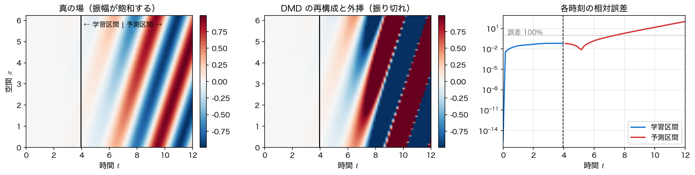

時系列・流体データへの応用
これまでは、答えの分かっているきれいなデータで DMD が正しく動くことを確かめてきた。実際のデータには雑音が乗り、サンプリング間隔は誰かが決めた値で固定され、そもそも系は線形ではない。このページでは ランク \(r\) をどう選ぶか、\(\Delta t\) が粗いと何が壊れるか、学習区間の外へどこまで外挿できるか を数値で測り、DMD を使うときに何を疑うべきかを整理する。
題材は前ページと同じ、減衰する波（\(\mathrm{Re}\,\omega=-0.10\)、波数 \(1\)、角周波数 \(2\)）と成長する波（\(\mathrm{Re}\,\omega=+0.05\)、波数 \(3\)、角周波数 \(5\)）を重ねた \(128\times80\) の場である。真の \(\omega\) が分かっているので、雑音や粗いサンプリングがどれだけ答えをずらすかを誤差として測れる。
import numpy as np
def dmd(X, dt, r):
"""第1ページと同じ関数（λ・ω・モード Φ・振幅 b・特異値を返す）。"""
X1, X2 = X[:, :-1], X[:, 1:]
U, S, Vh = np.linalg.svd(X1, full_matrices=False)
Ur, Sr, Vr = U[:, :r], S[:r], Vh[:r].conj().T
At = Ur.conj().T @ X2 @ Vr / Sr
lam, W = np.linalg.eig(At)
Phi = X2 @ Vr / Sr @ W
b = np.linalg.lstsq(Phi, X[:, 0], rcond=None)[0]
return lam, np.log(lam.astype(complex))/dt, Phi, b, S
def wave(x, t):
"""減衰する波（Re ω=-0.10）と成長する波（+0.05）の重ね合わせ。"""
Xg, Tg = np.meshgrid(x, t, indexing="ij")
return (np.exp(-0.10*Tg)*np.cos(1.0*Xg - 2.0*Tg)
+ 0.7*np.exp(0.05*Tg)*np.cos(3.0*Xg - 5.0*Tg))
nx, nt = 128, 80
x = np.linspace(0, 2*np.pi, nx, endpoint=False)
t = np.linspace(0, 12.0, nt)
dt = t[1] - t[0]
D = wave(x, t)
print(f"データ {D.shape} Δt = {dt:.4f} ナイキスト角周波数 {np.pi/dt:.3f}")
雑音とランクの選び方
雑音が乗ると、\(X_1\) の特異値は \(r\) 番目より先で零にならず、雑音の大きさに応じた 床 の上に並ぶ。\(m\times n\) の行列に標準偏差 \(\sigma\) の白色雑音を加えたとき、雑音だけの部分の最大特異値はおよそ \(\sigma(\sqrt m+\sqrt n)\) になることが知られている（第13回で使ったのと同じ目安である）。信号の特異値がこの床より十分大きければ、両者の間に段差が現れ、そこが \(r\) の切りどころになる。
for sd in (0.01, 0.05, 0.20):
Dn = D + np.random.default_rng(3).normal(0, sd, D.shape)
S = np.linalg.svd(Dn[:, :-1], compute_uv=False)
print(f"σ={sd:5.2f}: σ_4={S[3]:7.3f} σ_5={S[4]:6.3f}"
f" (比 {S[3]/S[4]:5.1f})"
f" 雑音の目安 {sd*(np.sqrt(nx)+np.sqrt(nt-1)):.2f}")
σ= 0.01: σ_4= 30.154 σ_5= 0.190 (比 158.4) 雑音の目安 0.20
σ= 0.05: σ_4= 30.122 σ_5= 0.952 (比 31.7) 雑音の目安 1.01
σ= 0.20: σ_4= 30.093 σ_5= 3.805 (比 7.9) 雑音の目安 4.04
\(\sigma=0.01\) なら \(\sigma_4\) と \(\sigma_5\) の比は \(158\) 倍で段差は歴然だが、\(\sigma=0.20\) では \(8\) 倍にまで縮む。実測の \(\sigma_5\) が理論の目安 \(\sigma(\sqrt m+\sqrt n)\) とよく合っていることも確認できる。特異値のスペクトルを対数軸で描き、床から立ち上がっている本数を数える ── これが実務での \(r\) の決め方である。
では、切り方を間違えるとどうなるか。\(\sigma=0.05\) の雑音を乗せたデータで \(r\) を変え、真の場との再構成誤差と、真の \(\omega\)（\(-0.10\pm2i\)、\(0.05\pm5i\)）とのずれを測る。ずれは 両方向 で測らなければならない。「真の \(\omega\) から最も近い推定値までの距離」は取りこぼしがあれば大きくなるが、余分な偽モードがいくつ混ざっていても増えない。逆に「推定した \(\omega\) から最も近い真の値までの距離」は、偽モードが \(1\) 本でもあれば大きくなる。片方だけ見ていると必ず判断を誤る。
ot = np.array([-0.10+2j, -0.10-2j, 0.05+5j, 0.05-5j])
Dn = D + np.random.default_rng(4).normal(0, 0.05, D.shape)
for r in (2, 4, 10, 40):
lam, om, Phi, b, _ = dmd(Dn, dt, r)
rec = np.real(Phi @ np.array([b*lam**k for k in range(nt)]).T)
e = np.linalg.norm(D - rec)/np.linalg.norm(D)
ef = max(np.abs(om - w).min() for w in ot) # 真 → 最も近い推定
eb = max(np.abs(ot - w).min() for w in om) # 推定 → 最も近い真
print(f"r={r:2d}: 再構成誤差 {e:.4f} 取りこぼし {ef:.2e}"
f" 余分なモード {eb:7.4f}")
r= 2: 再構成誤差 0.5401 取りこぼし 3.00e+00 余分なモード 0.0082
r= 4: 再構成誤差 0.0176 取りこぼし 1.46e-03 余分なモード 0.0015
r=10: 再構成誤差 0.0174 取りこぼし 1.27e-03 余分なモード 22.5416
r=40: 再構成誤差 0.0172 取りこぼし 1.70e-03 余分なモード 17.1330
\(r=2\) では 減衰するモード を丸ごと落としてしまい、誤差は \(54\%\) に達する。取りこぼしの \(3.0\) は \(\omega=-0.10\pm2i\) を拾えなかったことを意味している。残ったのは成長する側の \(0.048\pm4.99i\) のほうで、これは観測区間 \(t\in[0,12]\) で成長する波のエネルギーが大きいからである（雑音なしの特異値も \(49.1,\ 48.5\) 対 \(32.1,\ 30.2\) でエネルギー比 \(2.46\) 倍）。SVD は素直にエネルギーの大きいほうを先に選ぶ。ランク不足は致命的 である。
\(r=4\) にすると再構成誤差は \(1.8\%\)、両方向のずれも \(10^{-3}\) 台に落ちる。問題はその先で、\(r\) を \(10\) や \(40\) に増やしても再構成誤差はほとんど変わらない（\(0.0176\to0.0174\to0.0172\)）のに、余分なモードの側は \(22.5\)、\(17.1\) と跳ね上がる。雑音を拾った偽の \(\omega\) が大量に混ざっているのである。過剰なランクは再構成の精度こそ落とさないが、\(\omega\) の一覧をゴミだらけにする ── これが正確な言い方で、「多めに取れば無害」ではない。
では、そのゴミをどう見分けるか。振幅を見ればよい。ただし \(\lvert b_i\rvert\) をそのまま見てはいけない。前ページに書いたとおり、\(\phi_i\) を \(c\) 倍すれば \(b_i\) は \(1/c\) 倍になるので、\(\lvert b_i\rvert\) 単独では大小を比べられないからである。規格化に依らない量 \(\lvert b_i\rvert\lVert\phi_i\rVert\) ── そのモードが \(k=0\) でデータに与える寄与の大きさ ── で並べる。
lam, om, Phi, b, _ = dmd(Dn, dt, 40)
w = np.abs(b)*np.linalg.norm(Phi, axis=0) # 規格化に依らない重み
for j in np.argsort(-w)[:6]:
print(f"ω = {om[j].real:8.4f}{om[j].imag:+9.4f}i"
f" |b| ||φ|| = {w[j]:7.4f}")
print("Re ω > 0 のモード数 :", int((om.real > 0).sum()))
ω = -0.1009 +2.0001i |b| ||φ|| = 5.6631
ω = -0.1009 -2.0001i |b| ||φ|| = 5.6631
ω = 0.0509 +5.0015i |b| ||φ|| = 3.9041
ω = 0.0509 -5.0015i |b| ||φ|| = 3.9041
ω = -6.8499 +20.6822i |b| ||φ|| = 0.7660
ω = -11.5198 +0.0000i |b| ||φ|| = 0.4696
Re ω > 0 のモード数 : 2
重みの上位 \(4\) 本がちょうど真の \(4\) モードで、\(5\) 番目からは \(1/5\) 以下に落ちる。重みの大きい順に並べて段差の手前で切る ── これが \(r\) を多めに取ったあとの後始末である。\(40\) 本のうち \(\mathrm{Re}\,\omega>0\) になったのは真の成長モード \(2\) 本だけで、この例では偽の成長は現れなかった。
余分なモードは「偽の成長」を生みうる
上の例ではたまたま起きなかったが、雑音を拾ったモードが \(\lvert\lambda\rvert>1\) の位置に落ちることは珍しくない。学習区間の再構成は悪くならないので気づきにくく、外挿してはじめてその偽の成長が指数的に暴れる。ランクを多めに取ったときは、\(\mathrm{Re}\,\omega\) の大きいモードについて重み \(\lvert b_i\rvert\lVert\phi_i\rVert\) を必ず確認し、無視できるほど小さければ切り捨てる。
サンプリング間隔とエイリアシング
\(\omega=\log\lambda/\Delta t\) の対数は多価関数である。\(\lambda\) の偏角は \((-\pi,\pi]\) の範囲でしか決まらないので、DMD が同定できる角周波数には
という上限がある。これは第3回の サンプリング定理 そのもので、右辺は角周波数で書いたナイキスト周波数である。これを超える振動は折り返す。折り返し先は、整数 \(q\) を適当に選んだ
のうち、上の上限を満たすものである。上限をわずかに超えた程度なら \(q=\pm1\) で足りるが、\(\omega\) がナイキストの何倍もあるときは \(q\) もそのぶん大きくなる。「\(2\pi/\Delta t\) を一度引けばよい」わけではないので注意する。
同じデータを間引いて \(\Delta t\) を粗くしていくと、何が起きるか。
for step in (1, 2, 6, 8):
ts, ds = t[::step], dt*step
_, om, _, _, _ = dmd(wave(x, ts), ds, 4)
w = np.sort(np.abs(np.imag(om)))
print(f"Δt={ds:.4f} 枚数{len(ts):3d} ナイキスト{np.pi/ds:7.3f}: "
f"|Im ω| = {w[0]:.4f}, {w[2]:.4f}")
Δt=0.1519 枚数 80 ナイキスト 20.682: |Im ω| = 2.0000, 5.0000
Δt=0.3038 枚数 40 ナイキスト 10.341: |Im ω| = 2.0000, 5.0000
Δt=0.9114 枚数 14 ナイキスト 3.447: |Im ω| = 1.8941, 2.0000
Δt=1.2152 枚数 10 ナイキスト 2.585: |Im ω| = 0.1705, 2.0000
\(\Delta t=0.9114\)（ナイキスト \(3.447\)）になると、\(\omega=5\) が上限を超えて \(1.894\) という偽の値に化ける。\(q=1\) をとれば \(5-2\pi/0.9114=5-6.894=-1.894\) となり、実データなので共役対として \(\pm1.894\) が現れる ── 予測どおりである。\(\Delta t=1.2152\) でも \(q=1\) で \(5-5.170=-0.171\) になる。\(\omega=2\) のほうは最後までナイキスト内に留まるので正しい。
折り返した周波数は「もっともらしい」
エイリアシングの怖いところは、結果が壊れて見えないことである。\(\lvert\lambda\rvert\) は \(1\) 近くのままで、モードの形も一応それらしく、\(\omega=1.894\) という数字だけが静かに間違っている。
しかも 得られた \(\omega\) を眺めるだけでは折り返しを検出できない。折り返し先はナイキストのすぐ内側とは限らないからである。上の \(\Delta t=1.2152\) の例では \(0.171\) ── ナイキスト \(2.585\) から遠く離れた、いかにも「ゆっくりした本物のモード」に見える位置に落ちている。「ナイキストの近くに出ていないから大丈夫」という確認は、何も保証しない。
防ぎ方は \(2\) つしかない。\(1\) つは 測る前に 対象がどこまで速く振動しうるかを見積もり、\(\Delta t\) をその周期の半分より細かく取ること（第3回で見たサンプリング定理の使い方そのものである）。もう \(1\) つは、同じ現象を \(2\) 通りの \(\Delta t\) で測って \(\omega\) を比べる こと。本物の \(\omega\) は \(\Delta t\) を変えても動かないが、折り返した偽の \(\omega\) は \(2\pi/\Delta t\) に引きずられて動く。上の表がまさにその実演になっている。
短期予測と外挿の限界
DMD の表現 \(x_k\simeq\Phi\,\mathrm{diag}(\lambda_i^k)\,b\) は \(k\) について解析的なので、\(k\) に学習区間より大きい値を入れれば 予測 になる。ただしそれは「系が今後も同じ線形則に従う」という仮定を置くことでもある。仮定が正しい場合と正しくない場合を並べて測る。
\(1\) つ目は前掲の指数の和のデータ（本当に \(x_{k+1}=Ax_k\) に従う）。\(2\) つ目は振幅がシグモイドで飽和するデータ
で、これは指数関数の有限和では書けない（飽和は非線形の典型である）。どちらも先頭 \(27\) 枚（\(t\le3.95\)）だけで学習し、残り \(53\) 枚を予測させる。ランクは \(2\) つのデータで違う（波を \(2\) つ重ねた前者は \(4\)、進行波が \(1\) つの後者は \(2\)）ので、それぞれに合わせて \(r\) を渡す。
def horizon(Dat, ntr, r):
"""先頭 ntr 枚だけで学習し、全区間の相対誤差と最大成長率を返す。"""
lam, om, Phi, b, _ = dmd(Dat[:, :ntr], dt, r)
rec = np.real(Phi @ np.array([b*lam**k for k in range(nt)]).T)
e = np.linalg.norm(Dat - rec, axis=0)/np.linalg.norm(Dat, axis=0)
return e, np.real(om).max()
Xg, Tg = np.meshgrid(x, t, indexing="ij")
Ds = np.cos(1.0*Xg - 2.0*Tg)/(1.0 + np.exp(-(Tg - 7.0))) # 振幅が飽和
ntr = 27
for name, Dat, r in (("指数の和", D, 4), ("飽和あり", Ds, 2)):
e, mx = horizon(Dat, ntr, r)
print(f"{name}: 学習 {e[:ntr].mean():.3e} 予測 {e[ntr:].mean():.3e}"
f" max Re ω = {mx:7.4f}")
指数の和のデータでは、学習区間の \(1/3\) しか見ていないのに残り全部を機械精度で予測できる。仮定した形 ── 空間形状と指数関数の積の和 ── がデータの真の形とぴたり一致しているからで、こうなれば外挿は補間と同じ精度で当たる。
ただしこれを「DMD だけが持つ特権」と思ってはいけない。DMD 自体、時間変化を \(\lambda^k\) に固定した 構造つきの線形回帰 である。正しい関数形を仮定した回帰なら、多項式回帰でも指数回帰でも同じように外挿できる。外挿が当たるかどうかは仮定した関数形が正しいかどうかで決まる のであって、手法の名前で決まるわけではない。次に見るのは、その仮定が外れた場合である。
飽和するデータはそうならない。学習区間ではきれいに合う（誤差 \(4.3\%\)）のに、予測区間では誤差が平均 \(1440\%\)、最終時刻では \(10^4\%\) に達する。原因は \(\mathrm{Re}\,\omega\) の最大値が \(0.97\) という大きな正の値になっていることで、DMD は「立ち上がりの途中」だけを見て これからも指数的に増え続ける と読んでしまった。実際には \(t=7\) 付近で頭打ちになる。

予測できる時間は測って決める
「学習区間の何割まで予測してよい」といった 普遍的な経験則はない。予測が破綻するまでの時間は、雑音の大きさ・仮定した線形則からのずれ・固有値の推定誤差・そもそも観測が状態を捉えきれているか、のすべてに依存する。上の \(2\) 例がまさにその証拠で、同じ手法・同じ学習割合（先頭 \(1/3\)）でも、片方は残り全部を機械精度で当て、片方は平均誤差 \(1440\%\) を出す。
やるべきことは決まっている。手持ちのデータを分割して、誤差の伸び方を実測する ことである。前半 \(70\%\) だけで学習して後半 \(30\%\) の誤差曲線を描き、許容値を超える時刻を読む。それがそのデータでの予測可能時間である。区切りの位置をずらして何度か繰り返せば、見積もり自体がどれくらい安定かまで分かる。
DMD を使うときの注意
最後に、実データに当てるときに引っかかりやすい点をまとめる。
再構成の精度で POD を上回ることはない。 同じランクなら、Eckart–Young の定理により最良近似は SVD の打ち切りである。DMD はその最適性を捨てて、時間変化を \(\lambda^k\) に固定している。ただし「必ず負ける」のではなく「勝てない」だけで、\(\lambda^k\) という縛りがデータの真の形と合っていれば、両者は並ぶ。
U, S, Vh = np.linalg.svd(D, full_matrices=False)
for r in (2, 3, 4):
pod = (U[:, :r]*S[:r]) @ Vh[:r]
lam, om, Phi, b, _ = dmd(D, dt, r)
dm = np.real(Phi @ np.array([b*lam**k for k in range(nt)]).T)
print(f"r={r}: POD {np.linalg.norm(D-pod)/np.linalg.norm(D):.4f} "
f"DMD {np.linalg.norm(D-dm)/np.linalg.norm(D):.4f}")
差が出るのは真のランクに届かないうちだけで、\(r=2,3\) では POD のほうが小さい。\(r=4\) に達すると どちらも \(0.0000\) ── このデータは指数の和で厳密に書けるので、\(\lambda^k\) の縛りが真の構造そのものになり、DMD は最適近似に並ぶ。圧縮したいのか、解釈したいのか を先に決めてから手法を選ぶ。
平行移動する構造は苦手である。 一定速度で動く塊のような場は、固定した空間形状 \(\phi(x)\) の指数的な時間変化では表しにくく、DMD は多数のモードでそれを合成しようとする（第13回で POD が同じ弱点を持つと述べたのと同じ理由である）。移動座標系に乗り換える、あるいは移流を陽に扱う変種を使う。
過渡と定常が混ざったデータは分けて扱う。 DMD は全区間に一つの \(A\) を当てはめるので、途中で系の性質が変わるデータでは、両者の平均のような無意味な固有値が出る。区間を分けてそれぞれに DMD をかけ、\(\omega\) が変化する様子を追うほうがよい（時間窓を滑らせる streaming DMD / windowed DMD という考え方である）。
スナップショットは等間隔で、十分な枚数を。 モード数 \(r\) に対して最低でも \(m>r\) 枚、実用上は \(r\) の数倍は要る。\(\Delta t\) は前節のナイキスト条件を満たすように選ぶ。
まとめ
- 雑音下のランク選択は、特異値スペクトルの 段差 を探す。雑音床の目安は \(\sigma(\sqrt m+\sqrt n)\) で、実測ともよく合う。
- ランク不足は致命的（\(r=2\) で誤差 \(54\%\)、しかも成長するモードだけが残って減衰側が消える）。過剰なランクは再構成の精度こそ落とさない（\(r=40\) でも \(r=4\) とほぼ同じ）が、\(\omega\) の一覧に真値から \(20\) も離れた偽のモードを並べる。迷ったら多めに取り、\(\lvert b_i\rvert\lVert\phi_i\rVert\) の小さいモードを後から捨てる。
- 同定できる角周波数には \(|\mathrm{Im}\,\omega|<\pi/\Delta t\) という上限がある（第3回のサンプリング定理）。超えた成分は \(2\pi/\Delta t\) を引いた偽の周波数に化け、しかも結果は壊れて見えない。
- 仮定した形（空間形状 \(\times\) 指数関数の和）がデータの真の形と合っていれば外挿は当たる（学習 \(1/3\) で残り全部を機械精度で予測）。合っていなければ ── 振幅が飽和するなど ── 成長率を過大評価し、予測区間の誤差が \(1440\%\) に達する。予測できる時間は経験則ではなく、データを分割した実測で決める。
- 同じランクでの再構成精度で DMD が POD を上回ることはない（真のランクに達すれば並ぶ）。一方、周波数・成長率の解釈は DMD が上である。平行移動する構造、過渡と定常の混在は DMD の苦手分野である。
本講義との接続
ここまでの \(14\) 回で、系を「モードに分ける」という一つの考え方を、フーリエ級数・フーリエ変換（第2〜4回）、ラプラス変換と極（第6〜8回）、ウェーブレット（第10回）、固有値と線形安定性（第11回）、直交多項式（第12回）、特異値分解（第13回）、そして動的モード分解（第14回）と、\(7\) 通りの姿で見てきた。基底が事前に与えられているか（フーリエ・多項式）、データから決まるか（SVD・DMD）、時間の情報を使うか（DMD）── 違いはそこにある。第15回は発表会② で、第6〜14回の手法（ラプラス変換・短時間フーリエ変換・ウェーブレット変換・線形安定性・直交多項式展開・特異値分解・動的モード分解）から手法を選び（組み合わせてもよい）、自分で設定した問題に適用した結果を報告してもらう。準備の進め方は 発表会ガイド を参照のこと。手法の正しさを示す鍵は、このページで繰り返してきたとおり 答えの分かる問題で先に検証すること である。